Internacional
Clube atual
40 jogos · 1 gols
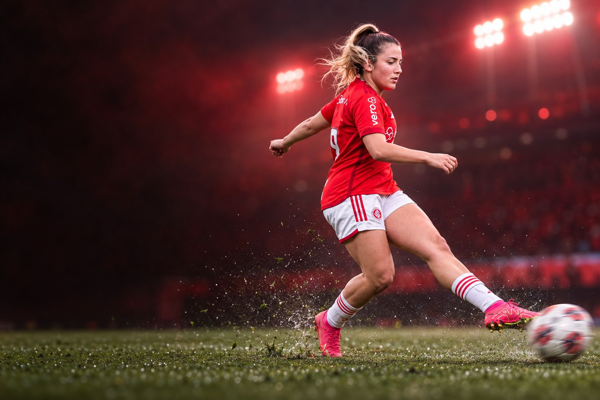
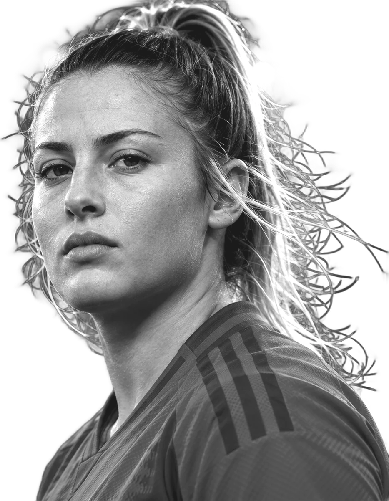
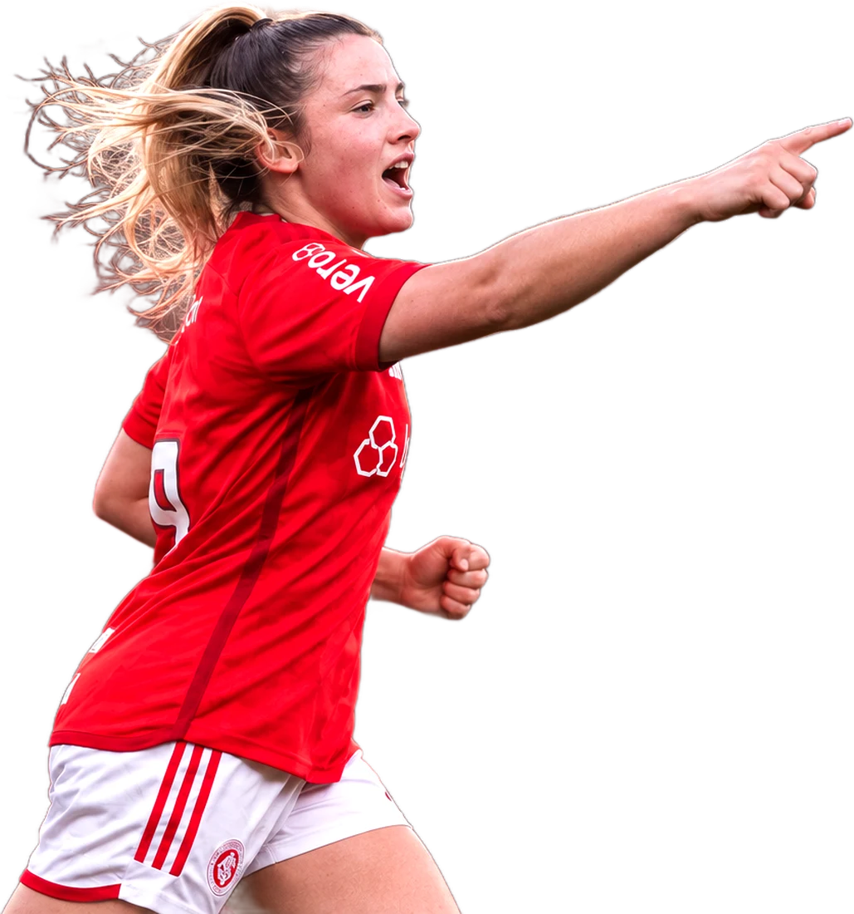
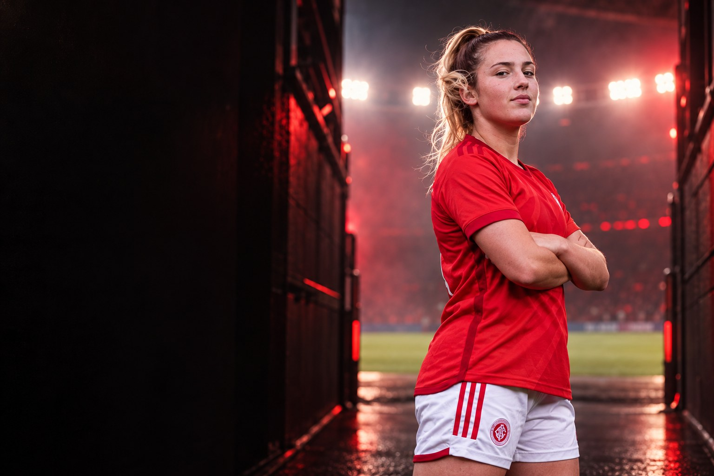
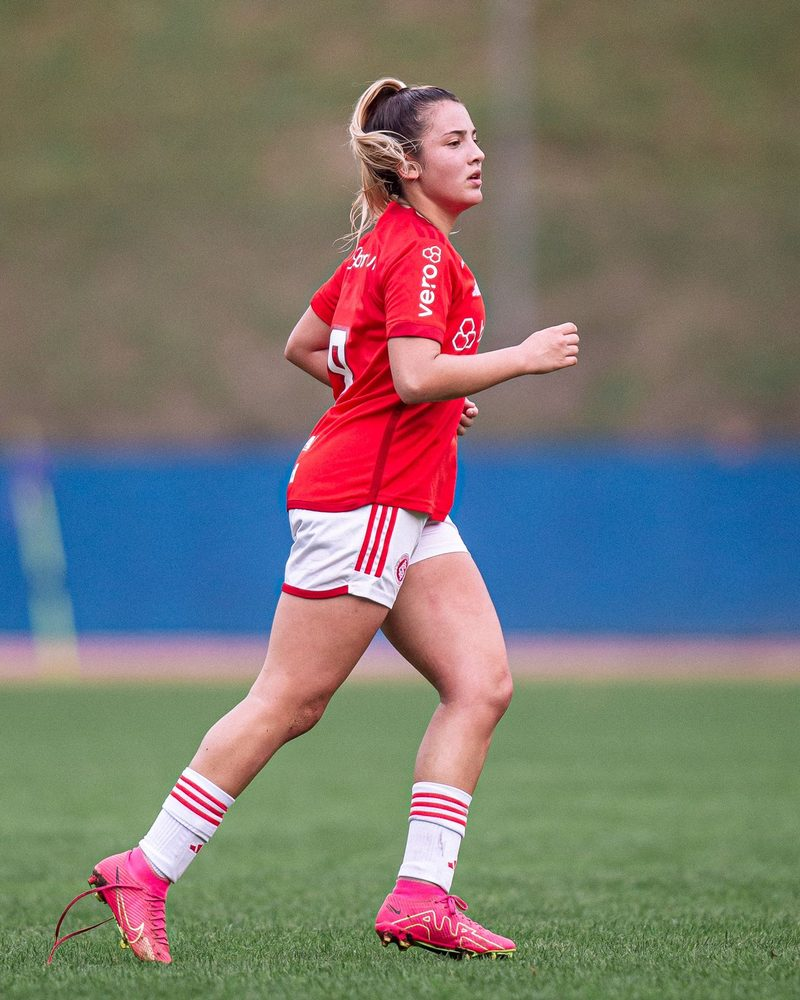
Sobre
Pietra Amanda Reichert é futebolista profissional e atua como volante. Clube atual: Internacional. Seleção: Brasil.
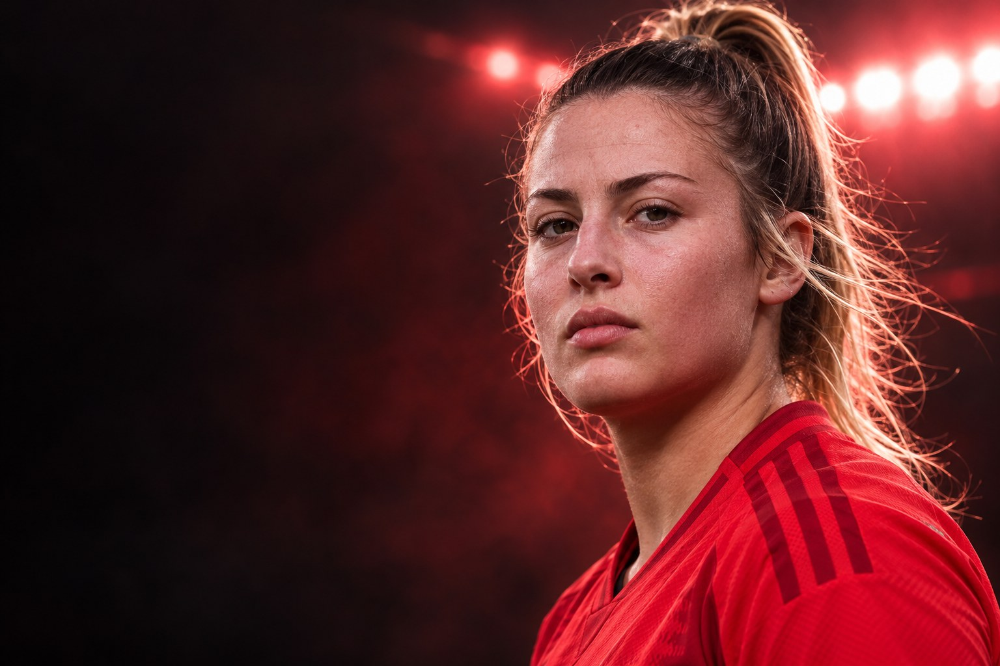
Perfil
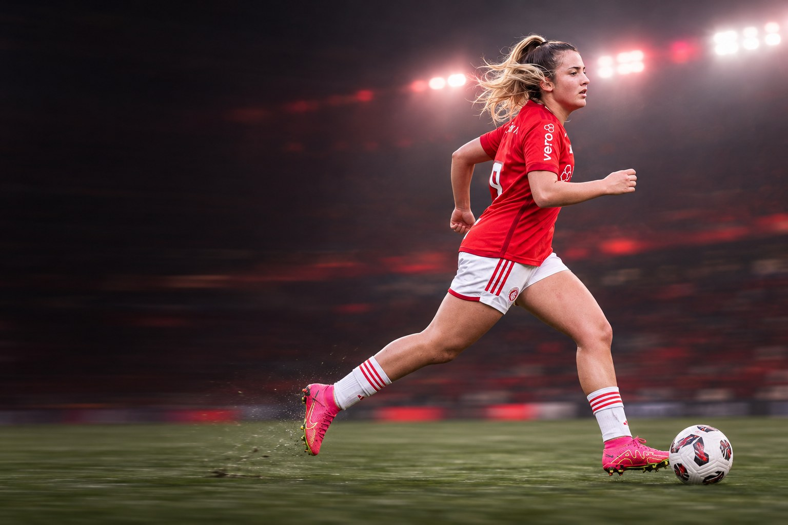
Carreira em números
Números
Carreira
Clubes em destaque
40 jogos · 1 gols
Conquistas
Galeria
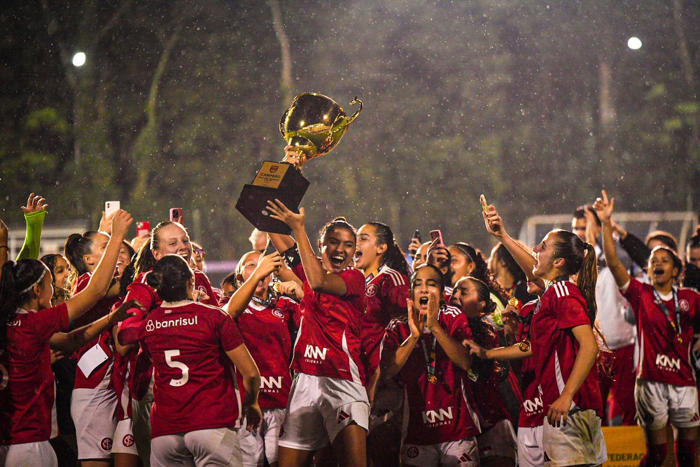
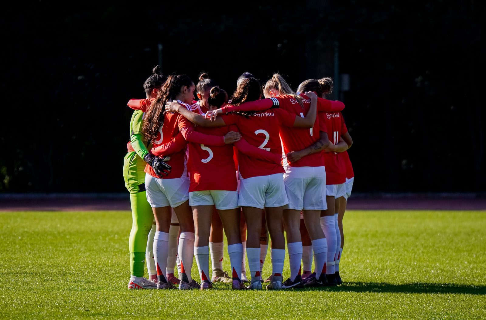
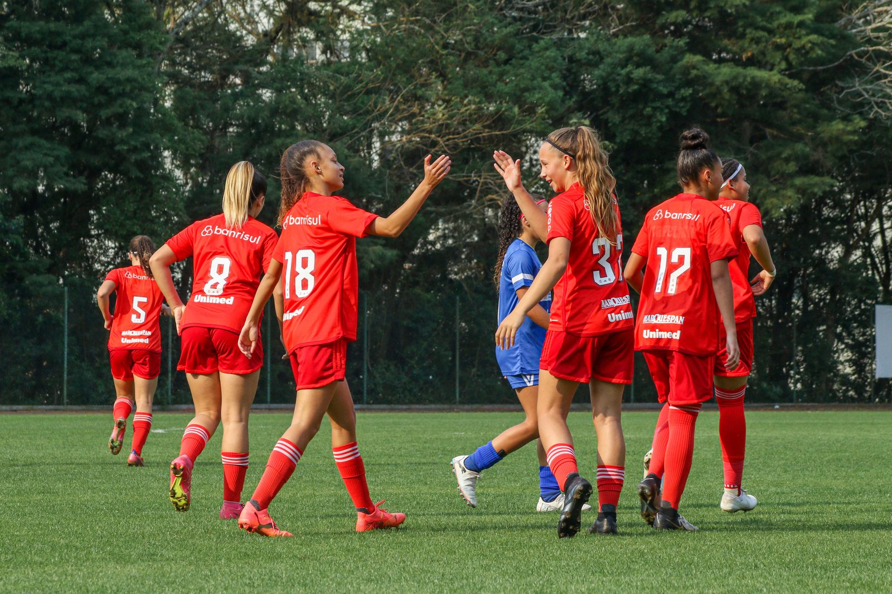
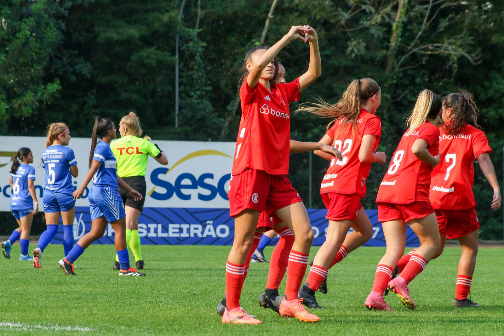
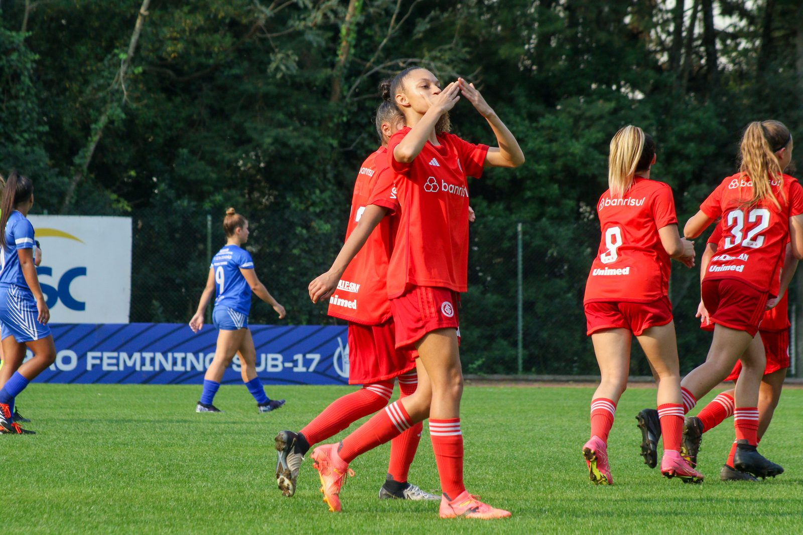
Currículo esportivo
| Temporada | Clube | País | Jogos | Gols | Assistências |
|---|---|---|---|---|---|
| 2026 | 8 | 0 | 0 | ||
| 2025 | 12 | 0 | 0 | ||
| 2024 | 10 | 0 | 0 | ||
| 2024 | 6 | 0 | 0 | ||
| 2023 | – | – | – | ||
| 2023 | 4 | 1 | 0 | ||
| 2022 | – | – | – | ||
| 2021 | – | – | – |
Jogos, gols e assistências conforme a base estatística Ogol. O clube atual segue o anúncio oficial do clube.
Na mídia
Contato profissional
Assuntos profissionais, comerciais e de carreira: fale com a X Soccer, que faz a gestão da carreira da atleta.
Mídia kit
International profile